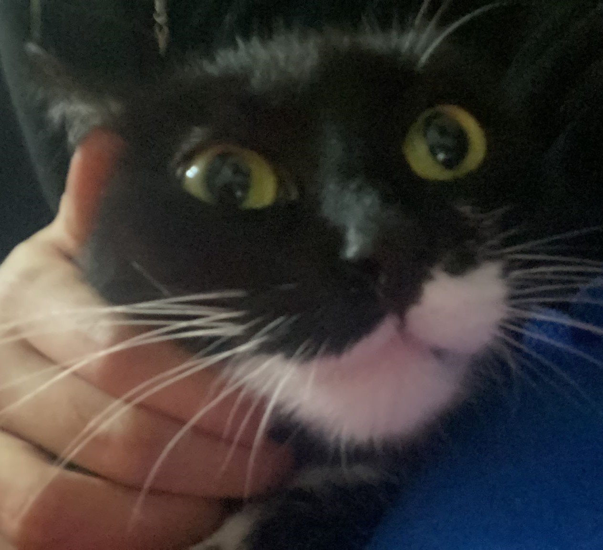
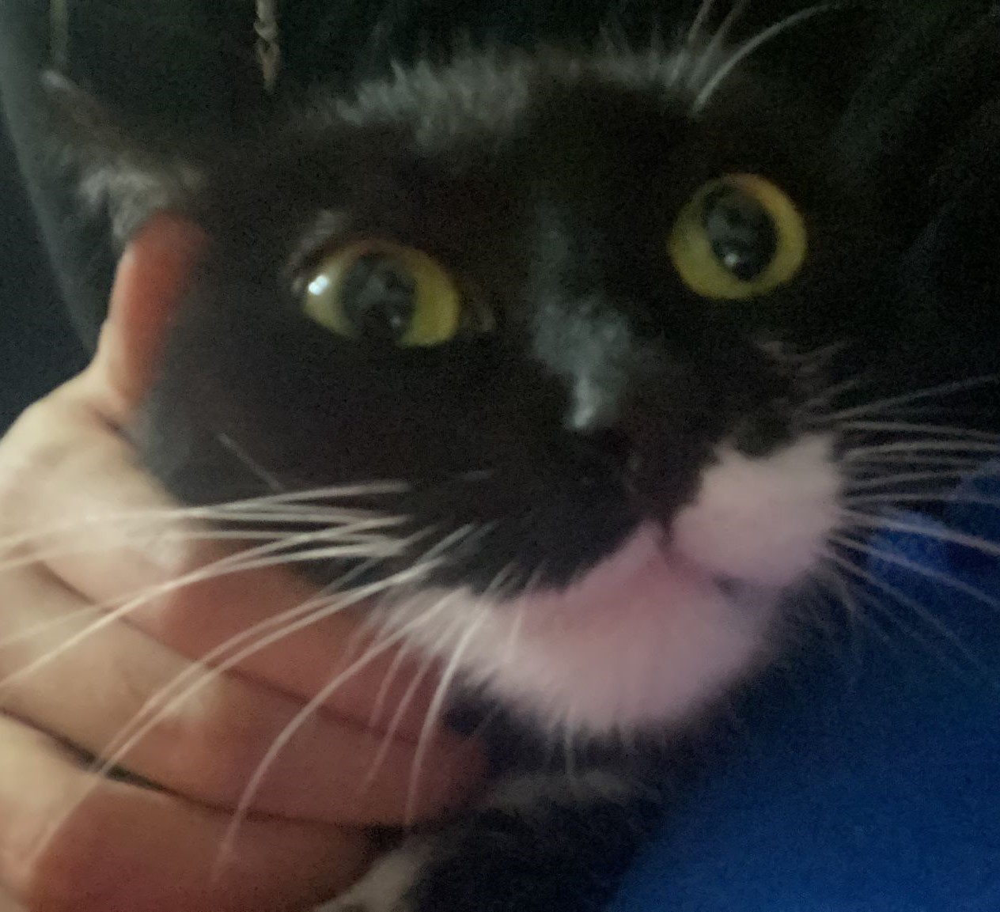

Empecemos!!
Para empezar, quiero hacerlo en partes, de como nos enamoramos hasta ahora en la actualidad...
La primera vez que nos conocimos no nos hicimos ninguna foto, pero ambas sabemos lo mucho que nos gustó y lo hablare mas adelante, esto dicho, en este día que fue en puerto de la cruz, nos hicimos nuestras primeras fotos juntas, tenía mucha verguenza pq sabes que no soy de eso, pero me alegro de que me obligaras, no tendría ninguna foto a no ser por ti y tu cabezonería que me encanta
Sé que la página no es que sea la mejor, pero esta hecho con mucho cariño y amor <3
Sabes que te quiero y te amo un montón, pero en el momento donde sentí que te amaba con locura fue en septiembre.
Septiembre fue uno de los mejores meses en nuestra relación, y es el mejor viaje que he hecho en la vida, me encantó todo, me encantó que me invitaran, no sabes la cara de felicidad que puse cuando me dijiste que me invitaban a ir pa alla. Estas 3 son algunas de mis favoritas, hay mas pero ns poner más fotos :c, cada día que me despertaba a tu lado me encantaba, y cada día te veías más guapa, ns como lo haces.
Estamos acabando ya, pero, obviamente falta una parte que no he nombrado, y son unas cositas que se nos hacen muy lindas a las dos...
 


NUESTRAS MASCOTITAAAAS, pelu y Toba aparte de Pumuki pero no tengo fotos de él :c, quiero tener más en un futuro asi que ya sabes ;D
Por último, solo me queda decirte que feliz cumpleaños atrasado, lo siento por no entregarlo a tiempo, y que Leonor, brillas por si sola, eres pura alegría y pura felicidad, ya en tu cumple te hice una carta y no quiero repetirla pero basicamente, mi amor, mi chica linda, eres mi universo, eres mi saturno, eres mi flor negra, eres mi jett y mi todo, eres todo lo que me gusta y más, tienes un corazón más grande que cualquier otra persona. FELICES 18!!!! Pondré algunas fotitos fuera de contexto.